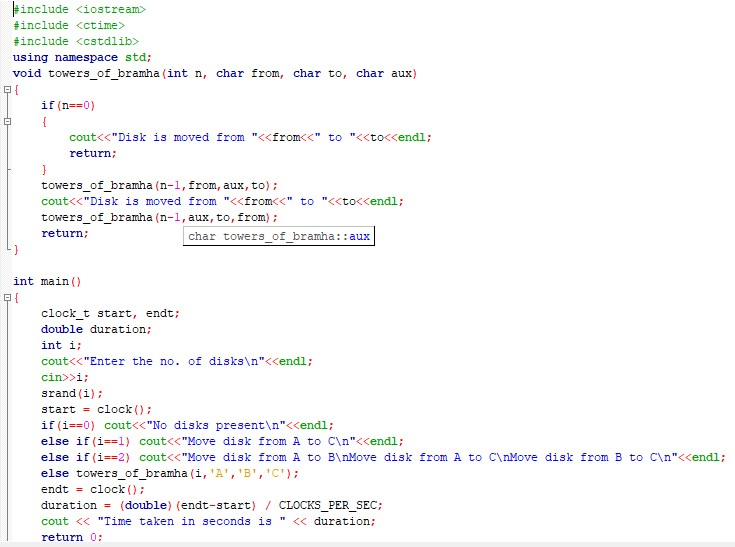
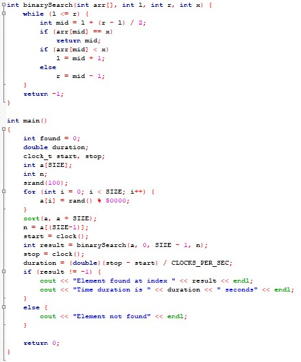
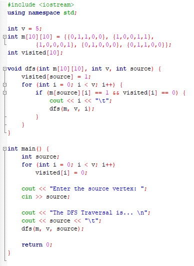
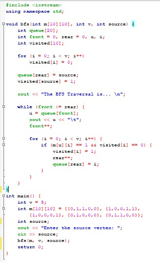
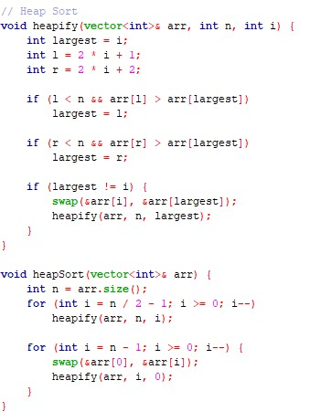
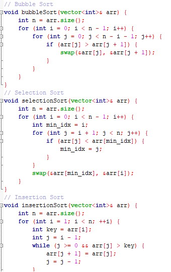
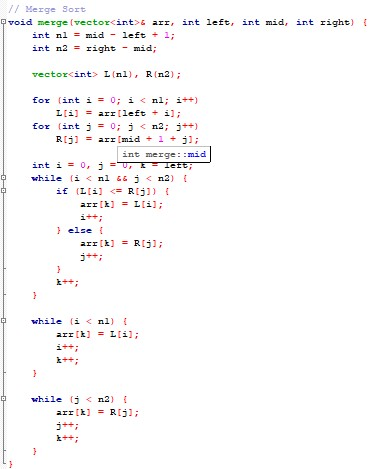
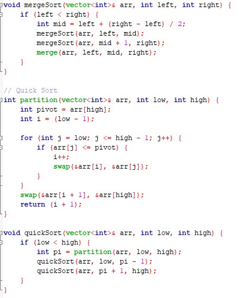

Reflections on Learning Algorithms & Data Structures
1. Understanding the Core Concepts
Time Complexity Analysis
- Grasping the abstract nature of Big O, Omega, and Theta notations can be challenging initially.
- Applying these time complexity concepts to real-world problems, especially involving nested loops or recursive algorithms, requires deep understanding.
- It can be counterintuitive to ignore constants and lower-order terms, but understanding why this simplification is important is crucial for analyzing the efficiency of algorithms.

Binary Search Trees (BST)
- Working with recursion in BST operations can be complex, especially for operations like insertion, deletion, and balancing.
- The deletion process, in particular, requires special attention, especially when a node has two children.
- Rebalancing techniques such as rotations are difficult but essential for maintaining the efficiency of self-balancing trees like AVL and Red-Black trees.

Depth First Search (DFS) & Breadth First Search (BFS)
- Both DFS and BFS can be challenging to implement correctly, especially when dealing with large or complex graphs.
- Choosing the appropriate graph representation (adjacency list vs. adjacency matrix) can impact the performance and memory usage.


Heap
- The concept of a heap, represented both as a binary tree and an array, can be difficult to conceptualize.
- Implementing heap operations such as heapify, insertion, and deletion requires a deep understanding of how elements are shifted within the heap.

Sorting Algorithms
- The large number of sorting algorithms, each with different time complexities and trade-offs, can be overwhelming to learn.
- Advanced algorithms such as merge sort and quicksort require careful attention to detail, especially with recursion and partitioning strategies.
- Deciding which algorithm to use in specific scenarios based on factors like dataset size or data characteristics can be a challenge.



Pattern Searching
- Optimized algorithms like KMP and Boyer-Moore, though highly efficient, require a thorough understanding of the underlying theory.
- Steps like pre-processing strings (e.g., building partial match tables) can be confusing initially, but are necessary for optimizing search performance.
2. Applying Theoretical Concepts to Real-World Scenarios
Time Complexity Analysis
- In real-world applications, understanding how theoretical time complexity correlates with actual performance on large datasets is key to making informed decisions about algorithm optimization.
Binary Search Trees (BST)
- BSTs are widely used in database systems and search engines. The ability to efficiently store, search, and retrieve data makes them essential in these systems, but they require mastery of complex operations like balancing and rebalancing to ensure performance is optimal.
DFS and BFS
- Both DFS and BFS are used in real-world applications such as network routing algorithms, web crawling, and even solving puzzles like mazes or Sudoku. While their theoretical foundations are important, understanding how to apply them effectively in large-scale, real-time applications can be complex.
Heap
- Heaps are integral to many systems, such as task schedulers and priority queues. Their use in these systems allows tasks to be processed based on priority, ensuring efficient resource allocation.
Sorting
- Optimizing sorting algorithms for massive datasets, such as in large-scale data processing systems or search engines, is a challenge. Understanding how to balance algorithmic complexity and memory usage is vital in these contexts.
Pattern Searching
- Efficient pattern searching algorithms are essential in real-world systems like search engines, plagiarism detection tools, and DNA sequence alignment. These systems rely heavily on optimized pattern matching techniques to perform at scale.
Graph Algorithms
- Graph algorithms have real-world applications in GPS navigation, social network analysis, and communication systems. For instance, understanding how to efficiently apply Dijkstra’s or A* algorithm in pathfinding systems can make a significant impact on the overall performance and user experience.
3. Effective Approaches for Solving Complex Problems
General Principles
- Understand the Problem: Before diving into code, ensure that you have a clear understanding of the problem’s requirements and constraints. This helps in selecting the appropriate approach.
- Analyze the Algorithm: Always analyze and compare different algorithms, keeping in mind their time and space complexities to ensure you choose the most efficient one.
- Choose the Right Data Structures: The correct data structure can significantly simplify the implementation of an algorithm. For example, using hash tables for fast lookups or arrays for contiguous memory storage can make a big difference.
- Weigh Trade-offs: Every decision comes with trade-offs. When solving problems, balance performance (speed) and memory usage based on the application’s needs.
- Optimize: Explore techniques like caching, memoization, or dynamic programming to reduce redundant computation and improve algorithm performance.
Specific Considerations
- When handling large datasets, prioritize algorithms with lower time complexity to ensure that processing times remain manageable.
- If memory is a constraint, consider algorithms with minimal space requirements and avoid data structures that consume excessive memory.
- Tailor your approach based on the specific characteristics of the problem. Sometimes, optimizing for time or space efficiency may require compromising on the other.
- In addition to efficiency, always consider the maintainability of the solution. Solutions that are simple to understand and maintain are often better in the long run.